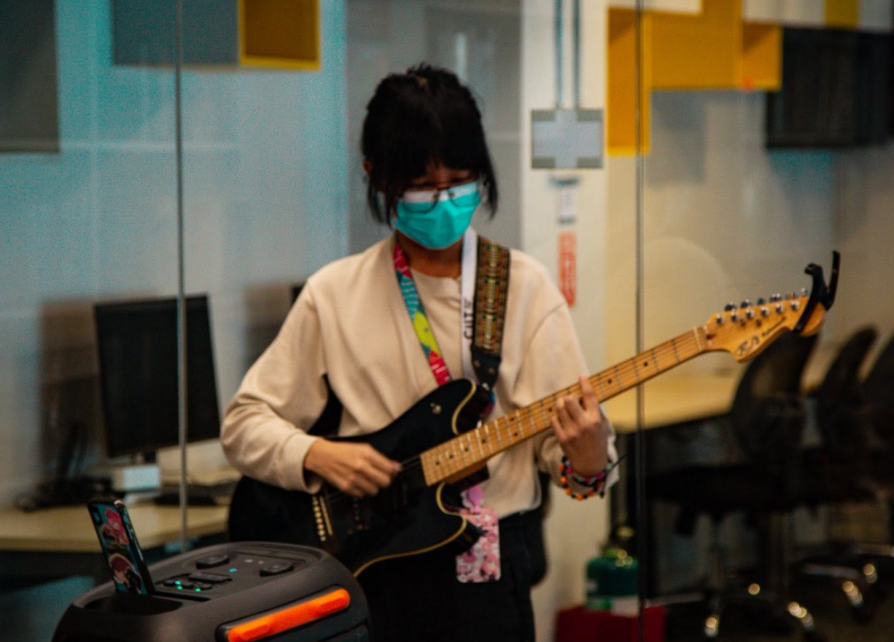
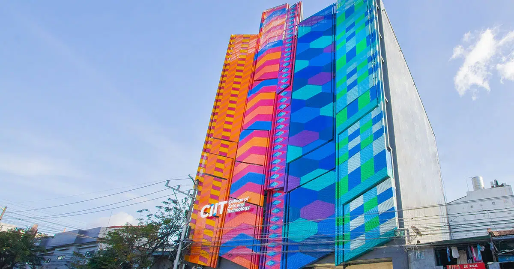

About me

* I’m Mateo Adora (also known as Espon / Esponja), a software and game developer, web
builder, and musician.
* Whether I’m writing code, building interactive prototypes, making music, or practicing
an instrument, I’m driven by curiosity and hands-on creation.
* I learn best by building things from scratch, testing how they break, and figuring out
how to make them work better.
Educational Background

* CIIT College of Innovation and Integrated Technology:
* Pursuing a Bachelor of Science in Entertainment and Multimedia Computing (BSEMC),
specializing in Game Development, combining core computer science fundamentals
(programming, data structures, information management) with game design, 2D/3D asset
production, physics, and interactive storytelling.
Strengths and Weakness
* Core Strengths:
- Curiosity (Seeker): High openness to exploring unfamiliar tools, languages, and
creative mediums.
- Adaptability: Comfortable adjusting code, layouts, and workflows when requirements or
feedback change mid-project.
- Kinesthetic Builder: Strongest when learning by doing the prototype, debugging, and
iterating directly in the editor rather than just memorizing theory.
* Weakness
- Time & Deadline Management: Balancing multiple coding assignments, personal builds,
and music practice can trigger procrastination when a task feels too open-ended.
Values and Principles
* Small Sparks, Big Impact: Every major project starts as a tiny, rough idea, consistent
iteration is what turns it into something real.
* Adaptability: Comfortable adjusting code, layouts, and workflows when requirements or
feedback change mid-project.
* Authenticity & Balance: Great technical work comes from staying genuinely curious
while protecting space for music, friends, and stepping away from the screen to
recharge.
Vision & Mission
* Vision: To grow into a well-rounded developer and creative technologist who builds
memorable games, interactive web tools, and digital experiences, while keeping music as
a lifelong creative outlet.
* Mission: To ship at least one complete, playable, or live project every academic year,
continuously sharpen my programming fundamentals, and collaborate with indie creators
and freelancers to bring their ideas online.
Achievements and Milestones
* Game Concept & Research Framework (Rimaya): Developed an educational game concept and
mixed-method research framework centered on Filipino rhymes and children's media.
* Indie Game Developer Interview & Case Study: Collaborated with teammates to interview
indie studio owner Mr. Dae Han Kim (The Very Evil Company) on game direction, scoping,
and industry realities.
* Client Website Commission: Designed, built, and launched a custom website from concept
to deployment based on live client feedback.